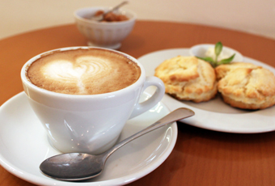
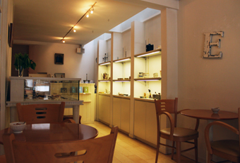
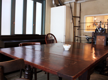
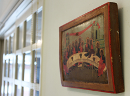

SHOP INFORMATIONantique et cafe Felicite
アンティーク雑貨が並ぶ心地よいカフェ

フランス語で「祝福」を意味するフェリシテ。カフェ内にはアンティーク雑貨が並べられています。オーナーが年に一度訪れるフランスのパリで買い付けに行くという雑貨は販売も行っています。アンティークものとしては格安で販売されているので要チェック。
ゆっくりと落ち着きながら楽しめるメニューは、「カプチーノ」とイギリスの代表的な3時のおやつである「スコーン」が人気。
焼きたてのスコーンにジャム、クリームチーズが添えられます。
ランチでは人気の天然酵母パンとカマンベールチーズが味わえます
ススメは、ランチメニューの「パンプレート」と「マフィントースト」。
プレートに乗るカマンベールチーズと天然酵母パンは「吉田牧場」と「おはようナーム」のもの。予約しないと買えないほどの人気があるお店のカマンベールチーズと天然酵母パンは価値アリ！また、30人までの貸切が可能。料理も予算によって対応してくれます。
その他、教室が定期的に行われています。人気のあるウクレレ（月2回）からフランス語（毎週2回）やエッチング（月1回）教室などが行われ、毎回コーヒーとケーキが付きます。
初心者でも馴染みやすい内容なので興味のある方はお問い合わせを。
Feliciteの場所と店内の様子

美観地区内にあるFeliciteは、本町通り沿いに位置します。
大原美術館から徒歩6分で近くには「吉井旅館」や「はしまや」などがあります。席数は約20席あり、店舗斜め向いに6台分の駐車スペースがあります。オーナーが好みのものだけを置いているというフランスアンティーク雑貨がディスプレイされた店内でくつろいでみてはいかがでしょうか。

- 
- 
Googleマップでみる
一覧に戻る